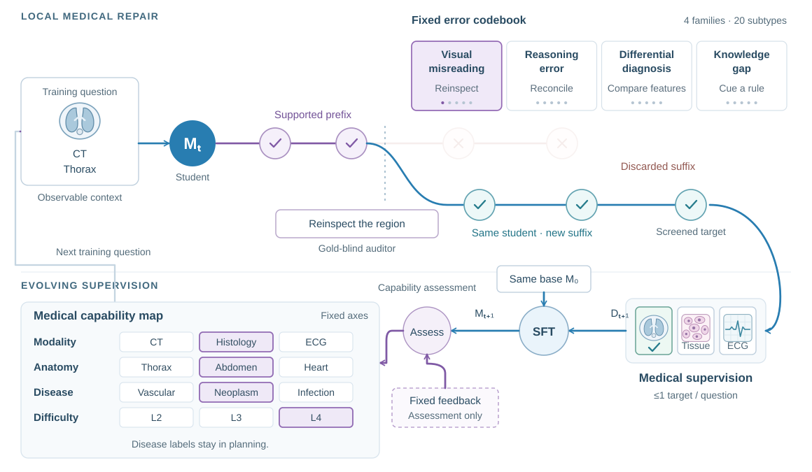
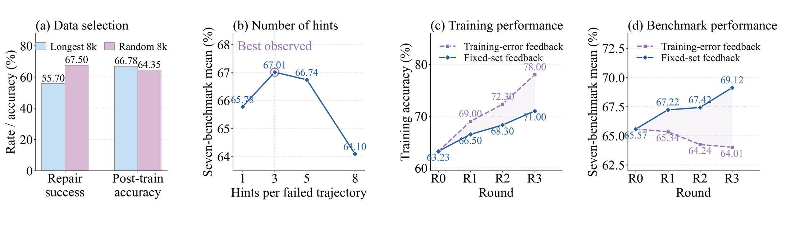
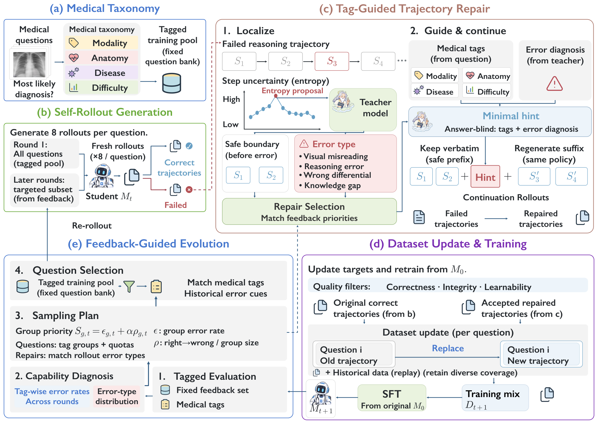

Harder to repair.
More useful to learn.
| Longest 8k | Random 8k | |
|---|---|---|
| Repair success | 55.70% | 67.50% |
| After training | 66.78% | 64.35% |
Mean benchmark accuracy. Length and difficulty are not separated.
 Zhejiang University
Zhejiang University Shanghai Jiao Tong University
Shanghai Jiao Tong UniversityAdvancing medical reasoning through knowledge-guided self-improvement.
KNOWLEDGE NAVIGATION
Case 1/4 · SchematicV1 · A missed finding calls for another look at the relevant image region.

Select an error card to play its complete cycle.
Four fixed medical tag axes guide selection. Repair uses observable tags; feedback questions stay out of training.
What the experiments reveal
| Longest 8k | Random 8k | |
|---|---|---|
| Repair success | 55.70% | 67.50% |
| After training | 66.78% | 64.35% |
Mean benchmark accuracy. Length and difficulty are not separated.
Seven-benchmark mean · Qwen3.5-9B
Base → round 3. Better training fit need not transfer.

Medical multimodal benchmarks
| Model | PMC- VQA |
VQA- RAD |
SLAKE | PathVQA | OmniMed VQA |
MedXQA | MMMU- Med |
Avg. |
|---|---|---|---|---|---|---|---|---|
| Proprietary models | ||||||||
| GPT-5.6-sol | 60.43 | 70.29 | 81.34 | 54.84 | 76.67 | 77.50 | 86.24 | 72.47 |
| Gemini-3.8-Flash | 64.52 | 74.72 | 81.34 | 58.58 | 80.76 | 86.30 | 89.10 | 76.47 |
| Open-source models (<10B) | ||||||||
| LLaVA-Med-7B | 30.50 | 53.70 | 48.00 | 38.80 | 44.30 | 20.30 | 29.30 | 37.84 |
| HuatuoGPT-V-7B | 53.30 | 67.00 | 67.80 | 48.00 | 74.20 | 21.60 | 47.30 | 54.17 |
| BiMediX2-8B | 43.50 | 49.20 | 57.70 | 37.00 | 63.30 | 21.80 | 39.80 | 44.61 |
| InternVL2.5-8B | 51.30 | 59.40 | 69.00 | 42.10 | 81.30 | 21.70 | 53.50 | 54.04 |
| InternVL3-8B | 53.80 | 65.40 | 72.80 | 48.60 | 79.10 | 22.40 | 59.20 | 57.33 |
| LINGSHU-7B | 56.30 | 67.90 | 83.10 | 61.90 | 82.90 | 26.70 | 54.00 | 61.83 |
| Qwen3.5-9B (Base) | 59.20 | 68.10 | 76.80 | 48.80 | 82.20 | 47.40 | 76.50 | 65.57 |
| Baseline 1 (HHD) | 58.93 | 67.65 | 71.45 | 50.12 | 82.35 | 48.75 | 76.90 | 65.16 |
| Baseline 2 (TrajFusion) | 59.32 | 69.12 | 77.23 | 49.23 | 83.46 | 49.56 | 77.20 | 66.45 |
| Baseline 3 (Teacher SFT) | 61.23 | 70.15 | 71.60 | 53.20 | 81.90 | 52.30 | 78.14 | 66.93 |
| MedEvo (9B) | 62.68 | 70.40 | 78.23 | 53.34 | 85.41 | 54.50 | 79.28 | 69.12 |
| Open-source models (>10B) | ||||||||
| HealthGPT-14B | 56.40 | 65.00 | 66.10 | 56.70 | 75.20 | 24.70 | 49.60 | 56.24 |
| HuatuoGPT-V-34B | 56.60 | 61.40 | 69.50 | 44.40 | 74.00 | 22.10 | 51.80 | 54.26 |
| InternVL3-14B | 54.10 | 66.30 | 72.80 | 48.00 | 78.90 | 23.10 | 63.10 | 58.04 |
| InternVL2.5-38B | 57.20 | 61.40 | 70.30 | 46.90 | 79.90 | 24.40 | 61.60 | 57.39 |
| InternVL3-38B | 56.60 | 65.40 | 72.70 | 51.00 | 79.80 | 25.20 | 65.20 | 59.41 |
| LINGSHU-32B | 57.90 | 76.50 | 89.20 | 65.90 | 83.40 | 30.90 | 62.30 | 66.59 |
| Qwen3.5-35B (Base) | 62.40 | 70.50 | 70.10 | 49.15 | 83.20 | 60.00 | 80.00 | 67.91 |
| MedEvo (35B) | 64.63 | 75.83 | 80.30 | 56.01 | 83.97 | 66.50 | 84.02 | 73.04 |
Bold / underline: best / second-best within each source group, with shared ranks for ties. Avg.: reported unweighted seven-benchmark mean. MedXQA: MedXpertQA-MM; MMMU-Med: medical subset of MMMU.
SFT only
Seven-benchmark mean accuracy (%)
pp: percentage points. Seven medical multimodal benchmarks.
The paper and project page are available. Implementation and training-data files are not released.

@misc{wang2026medevo,
title = {MedEvo: Medical Reasoning Evolution through Knowledge Navigation},
author = {Wang, Xiaoliang and Chen, Zhuo and Zheng, Chuanyang and
Wang, Quanbin and Lao, Jiangwei and Liu, Yingao and Liu, Jiajia and
Cao, Jinming and Lin, Honglin and Lu, Zhihong and Jin, Hao and
Wang, Jian and Wu, Lijun},
year = {2026},
url = {https://pork-pay.github.io/MedEvo/}
}